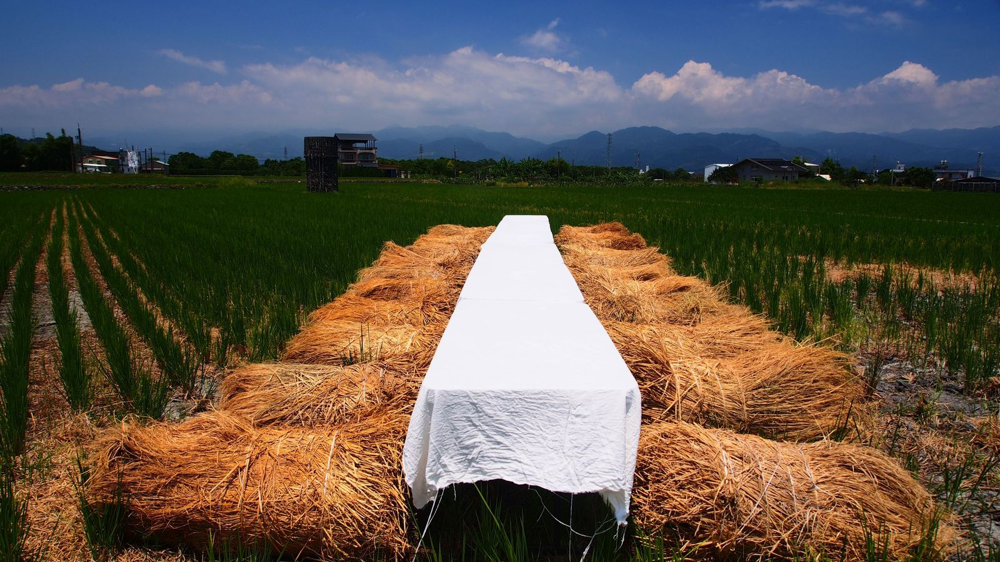
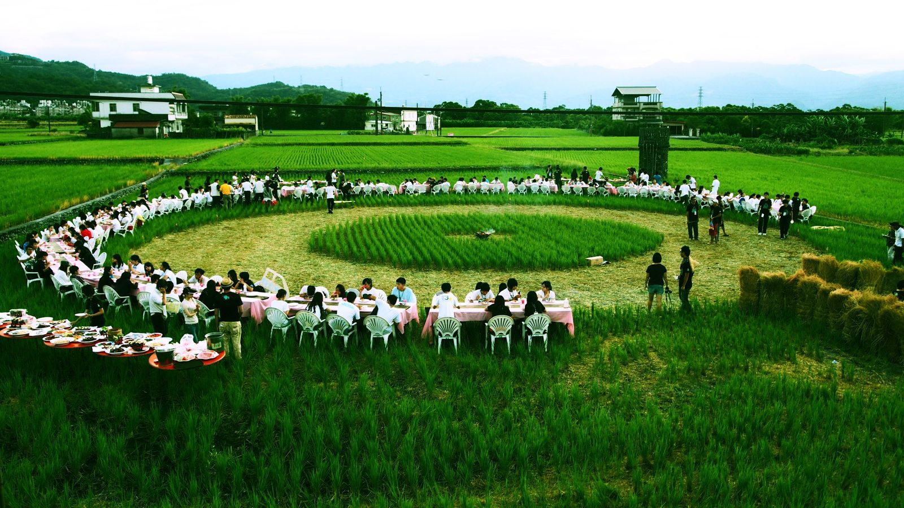
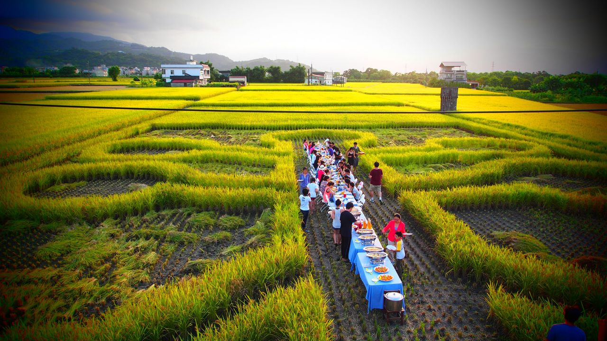
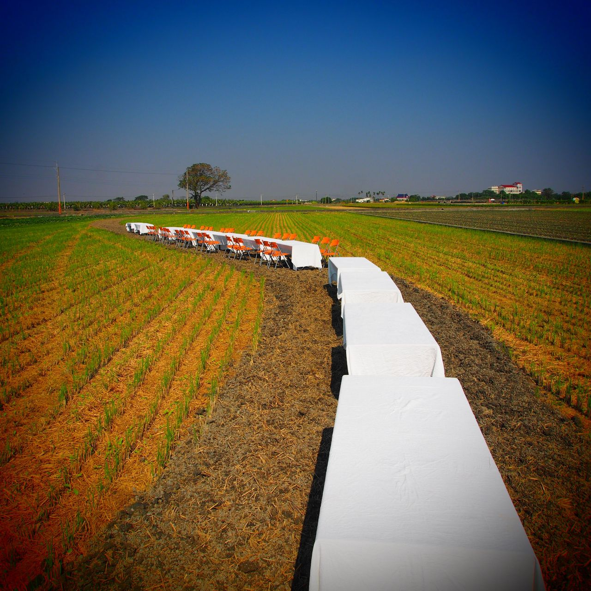
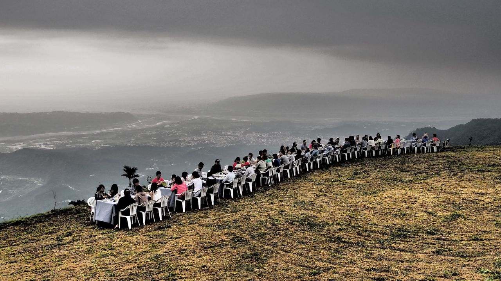
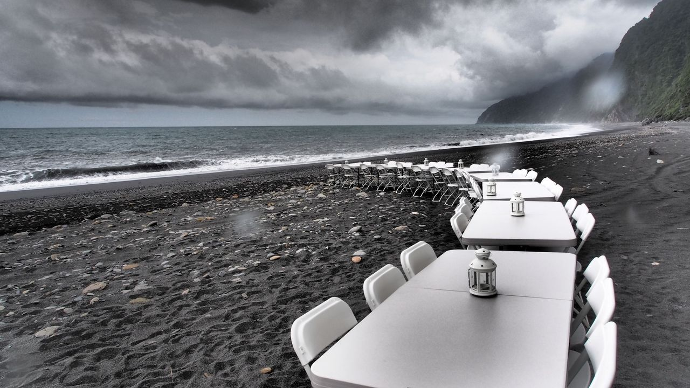
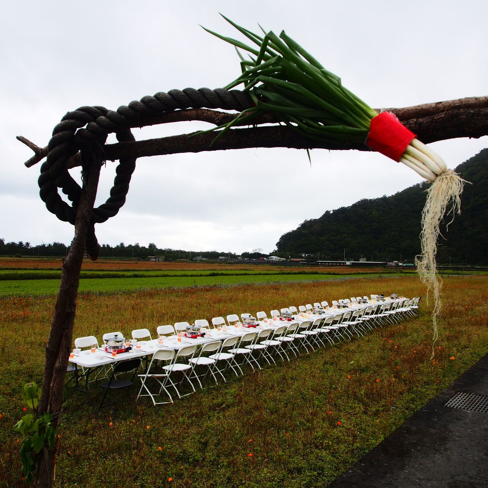
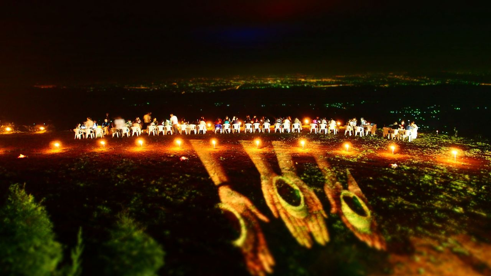

位子越高，越少有人對你說真話，你也越少對人說真話。
其實不只是位子高的人。每個人心裡，都有一句說不出口的真話。
會議室很難改變這件事，一張共同準備、共同吃完的餐桌可以。餐桌讓人放下頭銜與身分，回到最基本的樣子：一起做事，一起吃飯。
每個人出生之後，第一次與人的連結，就是從一張餐桌開始。透過這張餐桌，與這個世界的萬物連結。
幸福餐桌，是把這個連結找回來。
Every connection begins at a table.

一張長桌，一頓共同準備的飯，一段不看手機的時間。十四年來，超過 200 場。
幸福餐桌不只是一頓飯
而是幸福能量的啟動
— 簡家旗
位子越高，越少有人對你說真話，你也越少對人說真話。
其實不只是位子高的人。每個人心裡，都有一句說不出口的真話。
會議室很難改變這件事，一張共同準備、共同吃完的餐桌可以。餐桌讓人放下頭銜與身分，回到最基本的樣子：一起做事，一起吃飯。
每個人出生之後，第一次與人的連結，就是從一張餐桌開始。透過這張餐桌，與這個世界的萬物連結。
幸福餐桌，是把這個連結找回來。
稻田裡的餐桌是一棵樹，幸福餐桌是一片森林。
2012 年共同發起的「稻田裡的餐桌」，是一棵樹：根扎在田裡，年年結果。幸福餐桌是這棵樹的下一步，種子落到更多地方，長成一片森林。
稻田裡的餐桌這個名字保留：2017 年通過 SROI 認證的是它，十四年的田野經驗也以它為起點。幸福餐桌則把這份經驗延伸到更多的人與場域。
森林裡的萬物彼此相連。幸福餐桌也是如此：從一張餐桌出發，連結人，連結土地，連結這個世界的萬物。
2012 年，宜蘭秋天剛割完稻的田中央，擺了一張長桌。當地有機農民的米、隔壁村婆婆的菜，三十幾個人吹著田埂上的風，無人滑手機，一頓飯吃了四個小時。
那天才明白：幸福不是概念，是可以被設計、傳遞、複製的場景。
此後這張餐桌擺進薄扶林、秦皇島、成都、昆明。








不論場合大小，餐桌都在做同一件事：把人與萬物重新連結起來。它有同樣的骨架：
場稻田裡的餐桌，走過台灣、香港與中國大陸的河北、四川、雲南、河南、湖南。
SROI。每投入 1 元新台幣，創造 4.4 元社會價值（評估期間 2013 至 2016 年）。
稻田裡的餐桌成為亞洲第一家通過英國 SVI SROI 認證的農業社會企業。
Dao is simple · 簡家旗